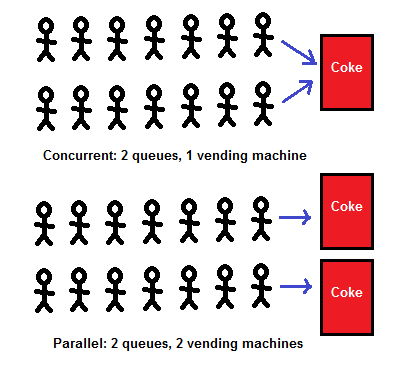

Welcome to the Linux Laboratory

Welcome to the working notebook that takes the form of practical exercises to be carried out in the Linux laboratory. This module's lab constitutes a series of six lab practicals which will guide you step-by-step to build a foundation of operative systems. The primary operative system architecture to be study is GNU/Linux system.
Typography Conventions for this Module
The tasks within each practical are listed along the left side of the notebook, each accompanied with an icon that intents to friendly inform about the complexity of each task. The icon represents a step-by-step guide activity which will instruct you with snippets of code; this is where you can relax and drink a cup of coffee or te. The icon represents a more challenging stage which builds upon previous tasks and keeps introducing formative elements.
The icon represents a section build upon an abstract level of knowledge which introduces advance concepts that require your initiative to visit external literature to strengthen your understanding of the material. The icon represents the highest stage of complexity designed for this module. Reaching this stage implies that you have fully understood the practical foundations; hence, high-level topics are introduced.
Finally, the icon provides with the oportunity to test your understanding of the practical.
- The filenames, variables, and snippets of code utilised to explain concepts will be stylish as example.
- Commands for you to type into your Linux prompt will be stylish as example.
Essentials
Along with the material provided, this notebook highlights essential concepts in bold; which are expected for the student to understand fully. If you are not familiar with them, please, conduct some quick search over the literature as you carry on with the practical.
To take the best out of these laboratories, you should carefully read the material, make sure all concepts highlighted in bold are understood, and carry on with the examples and tasks along with the notebook.
Be aware that in support of the students' proper academic development, these lab sessions are supported by the module's lecture and demonstrator staff; hence, feel free to ask for support when needed.
Introduction
Concurrency and parallelism are two commonly confused concepts. The reality, though, is that they are quite different. If you designed software to be concurrent when instead you needed parallel execution, then you could be seriously impacting your software's true performance potential.
You will notice that some of the concepts discussed in this material are familiar; in fact, this practical's material extends from Practical 4 where we learned about threads and processes. This practical, therefore, aims at formalising major concepts such as concurrency, parallelism, I/O bottlenecks, and CPU-bound bottlenecks.
Understanding concurrency
Concurrency is, essentially the practice of doing multiple things simultaneously, but not, specifically, in parallel. It can help us improve our applications' perceived performance, and it can also improve the speed at which our applications run.
The best way to think of how concurrency works is to imagine one person working on multiple tasks and quickly switching between these tasks. Imagine this one person working concurrently on a program, and, at the same time, dealing with support requests. This person would focus primarily on the writing of their program, and quickly context switch to fixing a bug or dealing with a support issue should there be one. Once they complete the support task, they could switch context again to writing their program quickly.
However, there are typically two performances bottlenecks in computing that we have to watch out for and guard against when writing our programs. It's essential to know the differences between the two bottlenecks as if you try to apply concurrency to a CPU-based bottleneck; then you would find that the program starts to see a decrease in performance as opposed to an increase. And if you tried to apply parallelism to a task requiring a concurrent solution, you could again see the same performance hits.
Concurrency
Concurrency means that an application is making progress on more than one task at the same time or at least seemingly at the same time (concurrently).
If the computer only has one CPU, the application may not make progress on more than one task simultaneously, but more than one task is in progress at a time inside the application. To make progress on more than one task concurrently the CPU switches between the different tasks during execution.

Parallel execution
Parallel execution is when a computer has more than one CPU or CPU core and makes progress on more than one task simultaneously. However, parallel execution is not referring to the same phenomenon as parallelism. I will get back to parallelism later.

Parallel concurrent execution
It is possible to have parallel concurrent execution, where threads are distributed among multiple CPUs. Thus, the threads executed on the same CPU are executed concurrently, whereas threads executed on different CPUs are executed in parallel.

Parallelism
The term parallelism means that an application splits its tasks up into smaller subtasks that can be processed in parallel, for instance on multiple CPUs simultaneously. Thus, parallelism does not refer to the same execution model as parallel concurrent execution, even if they may look similar on the surface.
To achieve true parallelism your application must have more than one thread running, and each thread must run on separate CPUs / CPU cores/graphics card GPU cores or similar.
The diagram below illustrates a more significant task split up into four subtasks. These four subtasks are being executed by four different threads, which run on two different CPUs. This means that parts of these subtasks are executed concurrently (those executed on the same CPU), and parts are executed in parallel (those executed on different CPUs).

If instead the four subtasks were executed by four threads running on each their own CPU (4 CPUs in total), then the task execution would have been fully parallel. However, it is not always easy to break a task into exactly as many subtasks as the number of CPUs available. It is often easier to break a task into some subtasks that fit naturally with the task at hand, and then let the thread scheduler distribute the threads among the available CPUs.
Concurrency
One excellent example of the benefits of multithreading is, without a doubt, the use of multiple threads to download multiple images or files. This is, actually, one of the best use cases for multithreading due to the blocking nature of I/O.
To highlight the performance gains, we will retrieve ten different images from http://lorempixel.com/400/200/sports, a free API that delivers a different image every time you hit that link. We'll then store these ten different images within a temp folder to view/use them later on.
Sequential download
First, we should have some form of a baseline against which we can measure the performance gains. To do this, we'll write a quick program that will download these ten images sequentially, as follows:
concurrency_1.py
import urllib.request
def downloadImage(imagePath, fileName):
print("Downloading Image from ", imagePath)
urllib.request.urlretrieve(imagePath, fileName)
def main():
for i in range(10):
imageName = "temp/image-" + str(i) + ".jpg"
downloadImage("http://lorempixel.com/400/200/sports", imageName)
if __name__ == '__main__':
main()
Breaking it down
In the preceding code, we begin by importing urllib.request. This will act as our medium for performing HTTP requests for the images that we want. We then define a new function called downloadImage, which takes in two parameters, imagePath and fileName. imagePath represents the URL image path that we wish to download. fileName represents the name of the file that we wish to use to save this image locally.
In the main function, we then start up a for loop. Within this for loop, we generate an imageName which includes the temp/ directory, a string representation of what iteration we are currently at str(i) and the file extension .jpg. We then call the downloadImage function, passing in the lorempixel location, which provides us with a random image as well as our newly generated imageName.
Upon running this script, you should see your temp directory sequentially fill up with 10 distinct images.
Concurrent download
Now that we have our baseline, it's time to write a quick program that will concurrently download all the required images. We'll be going over creating and starting threads in future chapters, so don't worry if you struggle to understand the code. The key point of this is to realise the potential performance gains to be had by writing programs concurrently:
concurrency_2.py
import threading
import urllib.request
import time
def downloadImage(imagePath, fileName):
print("Downloading Image from ", imagePath)
urllib.request.urlretrieve(imagePath, fileName)
print("Completed Download")
def executeThread(i):
imageName = "temp/image-" + str(i) + ".jpg"
downloadImage("http://lorempixel.com/400/200/sports", imageName)
def main():
t0 = time.time()
# create an array which will store a reference to
# all of our threads
threads = []
# create 10 threads, append them to our array of threads
# and start them off
for i in range(10):
thread = threading.Thread(target=executeThread, args=(i,))
threads.append(thread)
thread.start()
# ensure that all the threads in our array have completed
# their execution before we log the total time to complete
for i in threads:
i.join()
# calculate the total execution time
t1 = time.time()
totalTime = t1 - t0
print("Total Execution Time {}".format(totalTime))
if __name__ == '__main__':
main()
Breaking it down
In the first line of our newly modified program, you should see that we are now importing the threading module, enabling us to create our first multithreaded application. We then abstract our filename generation and call the downloadImage function into our executeThread function.
Within the main function, we first create an empty array of threads, then iterate ten times, create a new thread object, append this to our array of threads, and then start that thread.
Finally, we iterate through our array of threads by calling for i in threads and call the join method on each of these threads. This ensures that we do not proceed with our remaining code's execution until all of our threads have finished downloading the image.
If you execute this on your machine, you should see that it almost instantly starts downloading the ten different images. When the downloads finish, it again prints out that it has completed, and you should see the temp folder being populated with these images.
Both the preceding scripts do the same tasks using the same urllib.request library, but if you take a look at the total execution time, you should see an order of magnitude improvement on the concurrent script's time to fetch all ten images.
Essentials
By now, you should have an appreciation of some of the fundamental concepts that underlie concurrent programming. You should have a grasp of threads, processes, and you'll also know some of the limitations and challenges of Python when it comes to implementing your concurrent applications. Finally, you have also seen firsthand some of the performance improvements you can achieve if you were to add different concurrency types to your applications.
I/O Bottlenecks
I/O bottlenecks, are bottlenecks where your computer spends more time waiting on various inputs and outputs than it does on processing the information.
You'll typically find this type of bottleneck when you are working with an I/O heavy application. We could take your standard web browser as an example of a heavy I/O application. In a browser, we typically spend a significantly longer amount of time waiting for network requests to finish things such as style sheets, scripts, or HTML pages to load instead of rendering this on the screen.
If the rate at which data is requested is slower than the rate at which it is consumed, you have an I/O bottleneck.
One of the main ways to improve these applications' speed is to either improve the speed of the underlying I/O by buying more expensive and faster hardware or to improve the way we handle these I/O requests.
A great example of a program bound by I/O bottlenecks would be a web crawler. Now the primary purpose of a web crawler is to traverse the web, and essentially index web pages to be considered when Google runs its search ranking algorithm to decide the top 10 results for a given keyword.
We'll start by creating a straightforward script that requests a page and times how long it takes to request said web page, as follows:
bottleneck_1.py
import urllib.request
import time
t0 = time.time()
req = urllib.request.urlopen('https://www.bbc.co.uk/news')
pageHtml = req.read()
t1 = time.time()
print("Total Time To Fetch Page: {} Seconds".format(t1-t0))
If we break down this code, first we import the two necessary modules, urllib.request and the time module. We then record the starting time and request the web page, example.com, and then record the ending time and print out the time difference.
Now, say we wanted to add a bit of complexity and follow any links to other pages to index them in the future. We could use a library such as BeautifulSoup to make our lives a little easier, as follows:
bottleneck_2.py
import urllib.request
import time
from bs4 import BeautifulSoup
t0 = time.time()
req = urllib.request.urlopen('https://www.bbc.co.uk/news')
t1 = time.time()
print("Total Time To Fetch Page: {} Seconds".format(t1-t0))
soup = BeautifulSoup(req.read(), "html.parser")
for link in soup.find_all('a'):
print(link.get('href'))
t2 = time.time()
print("Total Execeution Time: {} Seconds".format)
You'll notice from this output that the time to fetch the page is over a quarter of a second. Now imagine if we wanted to run our web crawler for a million different web pages, our total execution time would be roughly a million times longer.
The real main cause for this enormous execution time would purely boil down to the I/O bottleneck we face in our program. We spend a massive amount of time waiting on our network requests, and a fraction of that time parsing our retrieved page for further links to crawl.
Parallelism
In Practical 4 we covered a bit about Python's multiprocessing capabilities, and how we could use this to take advantage of more of the processing cores in our hardware. But what do we mean when we say that our programs are running in parallel?
Parallelism is the art of executing two or more actions simultaneously as opposed to concurrency in which you make progress on two or more things at the same time. This is an important distinction, and to achieve true parallelism, we'll need multiple processors on which to run our code at the same time.
A good analogy for parallel processing is to think of a queue for Coke. If you have, say, two queues of 20 people, all waiting to use a coke machine so that they can get through the rest of the day with a bit of a sugar rush, well, this would be an example of concurrency. Now say you were to introduce a second coke machine, this would then be an example of something happening in parallel. This is precisely how parallel processing works each of the coke machines in that room represents one processing core and can make progress on tasks simultaneously:
A real-life example that highlights the true power of parallel processing is your computer's graphics card. These graphics cards tend to have hundreds, if not thousands, of individual processing cores that live independently and can compute things simultaneously. The reason we can run high-end PC games at such smooth frame rates is due to the fact we've been able to put so many parallel cores onto these cards.
Parallel download
The multiprocessing version of the code takes full advantage of the multiple CPUs from our computers. Note that the next example is similar to the one used in the previous section, with the difference that instead of using the threading library, we are using multiprocessing.
parallelism_1.py
import multiprocessing
import urllib.request
import time
def downloadImage(imagePath, fileName):
print("Downloading Image from ", imagePath)
urllib.request.urlretrieve(imagePath, fileName)
print("Completed Download")
def executeProcess(i):
imageName = "temp/image-" + str(i) + ".jpg"
downloadImage("http://lorempixel.com/400/200/sports", imageName)
def main():
t0 = time.time()
# create an array which will store a reference to
# all of our processes
processes = []
# create 10 processes, append them to our array of processes
# and start them off
for i in range(10):
process = multiprocessing.Process(target=executeProcess, args=(i,))
processes.append(process)
process.start()
# ensure that all the processes in our array have completed
# their execution before we log the total time to complete
for i in processes:
i.join()
# calculate the total execution time
t1 = time.time()
totalTime = t1 - t0
print("Total Execution Time {}".format(totalTime))
if __name__ == '__main__':
main()
A simpler way to maintain an ordered of results is to use the Pool.apply and Pool.map functions.
The Pool class
There are four methods that are particularly interesting: Pool.apply, Pool.map, Pool.apply_async, and Pool.map_async.
In the next two snippets of code, the Pool.map and Pool.apply methods will lock the main program until all processes are finished, which is quite useful if we want to obtain results in a particular order for certain applications.
parallelism_2.py
import multiprocessing as mp
def cube(x):
return x**3
pool = mp.Pool(processes=4)
results = [pool.apply(cube, args=(x,)) for x in range(1,7)]
print(results)
parallelism_3.py
import multiprocessing as mp
def cube(x):
return x**3
pool = mp.Pool(processes=4)
results = pool.map(cube, range(1,7))
print(results)
In contrast, the async variants will submit all processes at once and retrieve the results as soon as they are finished. One more difference is that we need to use the get method after the apply_async() call to obtain the return values of the finishing processes.
parallelism_4.py
import multiprocessing as mp
def cube(x):
return x**3
pool = mp.Pool(processes=4)
results = [pool.apply_async(cube, args=(x,)) for x in range(1,7)]
output = [p.get() for p in results]
print(output)
CPU-bound Bottlenecks
A CPU-bound bottleneck is, typically, the inverse of an I/O-bound bottleneck. This bottleneck is found in applications that do a lot of heavy number crunching, or any other task that is computationally expensive. These are programs for which the rate at which they execute is bound by the speed of the CPU, if you throw a faster CPU in your machine you should see a direct increase in the speed of these programs.
Improving number crunching with multiprocessing
In this example, we'll try to find the prime factors of 10,000 random numbers that fall between 20,000 and 100,000,000. We are not necessarily fussed about the order of execution so long as the work gets done, and we aren't sharing memory between any of our processes.
We'll first write a script that does this in a sequential manner which we can easily verify is working correctly:
bottleneck_1.py
import time
import random
def calculatePrimeFactors(n):
primfac = []
d = 2
while d*d <= n:
while (n % d) == 0:
primfac.append(d) # supposing you want multiple factors repeated
n //= d
d += 1
if n > 1:
primfac.append(n)
return primfac
def main():
print("Starting number crunching")
t0 = time.time()
for i in range(10000):
rand = random.randint(20000, 100000000)
print(calculatePrimeFactors(rand))
t1 = time.time()
totalTime = t1 - t0
print("Execution Time: {}".format(totalTime))
if __name__ == '__main__':
main()
Breaking it down
The first two lines make up our required imports--we'll be needing both the time and the random modules. After our imports, we then go on to define the calculatePrimeFactors function, which takes an input of n. This efficiently calculates all of the prime factors of a given number and appends them to an array, which is then returned once that function completes execution.
After this, we define the main function, which calculates the starting time and then cycles through 10,000 numbers, which are randomly generated by using random's randint. We then pass these generated numbers to the calculatePrimeFactors function, and we print out the result. Finally, we calculate the end time of this for loop and print it out.
If you execute this on your computer, you should see the array of prime factors being printed out for 10,000 different random numbers, as well as the total execution time for this code.
Optimization
So now let us look at how we can improve this program's performance by utilising multiple processes.
In order for us to split this workload up, we'll define an executeProc function, which, instead of generating 10,000 random numbers to be factorized, will generate 1,000 random numbers. We'll create ten processes, and execute the function ten times, though, so the total number of calculations should be the same as when we performed the sequential test:
bottleneck_2.py
import time
import random
from multiprocessing import Process
# This does all of our prime factorization on a given number 'n'
def calculatePrimeFactors(n):
primfac = []
d = 2
while d*d <= n:
while (n % d) == 0:
primfac.append(d) # supposing you want multiple factors repeated
n //= d
d += 1
if n > 1:
primfac.append(n)
return primfac
# We split our workload from one batch of 10,000 calculations
# into 10 batches of 1,000 calculations
def executeProc():
for i in range(1000):
rand = random.randint(20000, 100000000)
print(calculatePrimeFactors(rand))
def main():
print("Starting number crunching")
t0 = time.time()
procs = []
# Here we create our processes and kick them off
for i in range(10):
proc = Process(target=executeProc, args=())
procs.append(proc)
proc.start()
# Again we use the .join() method in order to wait for
# execution to finish for all of our processes
for proc in procs:
proc.join()
t1 = time.time()
totalTime = t1 - t0
# we print out the total execution time for our 10
# procs.
print("Execution Time: {}".format(totalTime))
if __name__ == '__main__':
main()
Breaking it down
This last code performs the exact same function as our originally posted code. The first change, however, is on line three. Here, we import the process from the multiprocessing module. Our following, the calculatePrimeFactors method has not been touched.
You should then see that we pulled out the for loop that initially ran for 10,000 iterations. We now placed this in a function called executeProc, and we also reduced our for loops range to 1,000.
Within the main function, we then create an empty array called procs. We then create 10 different processes, and set the target to be the executeProc function, and pass in no args. We append this newly created process to our procs arrays, and then we start the process by calling proc.start().
After we've created ten individual processes, we then cycle through these processes which are now in our procs array, and join them. This ensures that every process has finished its calculations before we proceed to calculate the total execution time.
If you execute this now, you should see the 10,000 outputs now print out in your console, and you should also see a far lower execution time when compared to your sequential execution.
This is just a very basic demonstration of how we can implement multiprocessing into our applications. In future chapters, we'll explore how we can create pools and utilise executors. The key point to take away from this is that we can improve the performance of some CPU-bound tasks by utilising multiple cores.
Assessment
An important take away from this practical is to note that that there is no silver bullet that you can apply to every application and see consistent performance improvements. One style of concurrent programming might work better than another depending on the requirements of your application.
As for today's assessment, before moving to the next section ensure you are comfortable discussing the terms such as concurrency, parallelism, and bottleneck.
Feel free to visit the complementary material provided below.
Resources
- Concurrent execution: https://docs.python.org/3/library/concurrency.html.
- Process-based parallelism: https://docs.python.org/3/library/multiprocessing.html.
- Thread-based parallelism: Thread-based parallelism.
Lab's Challenge
Congratulations on reaching the end of this practical. As you may have perceived, there is quite an amount of new information to conceptualise; also, we have detailed several examples to ensure a good understanding of the topics of interest for this practical.
In this context, we are happy to inform you that this practical does not include any challenge. You are free to peruse your lectures' material and complement the understanding of the concepts discussed within this practical.